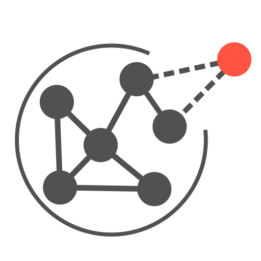

Index
C
|
D
|
F
|
G
|
H
|
I
|
M
|
N
|
P
|
R
|
S
|
T
|
U
C
calculate_degree_powerlaw_exponents() (netin.UnDiGraph method)
calculate_in_degree_powerlaw_exponents() (netin.DiGraph method)
calculate_out_degree_powerlaw_exponents() (netin.DiGraph method)
D
DegreeGroupRank (class in netin.sampling)
DegreeRank (class in netin.sampling)
DH (class in netin)
DiGraph (class in netin)
DPA (class in netin)
DPAH (class in netin)
F
fit() (netin.PA static method)
(netin.PAH static method)
(netin.PATC static method)
fit_degree_powerlaw() (netin.UnDiGraph method)
fit_power_law() (in module netin.stats.distributions)
G
generate() (netin.DiGraph method)
(netin.UnDiGraph method)
get_activity_distribution() (netin.DiGraph method)
get_average_degree() (in module netin.stats.networks)
get_average_degrees() (in module netin.stats.networks)
get_ccdf() (in module netin.stats.distributions)
get_cdf() (in module netin.stats.distributions)
get_disparity() (in module netin.stats.distributions)
get_edge_type_counts() (in module netin.stats.networks)
get_expected_density() (netin.DiGraph method)
get_expected_minimum_degree() (netin.UnDiGraph method)
get_expected_number_of_edges() (netin.DiGraph method)
(netin.UnDiGraph method)
get_expected_powerlaw_out_degree_majority() (netin.DiGraph method)
get_expected_powerlaw_out_degree_minority() (netin.DiGraph method)
get_fraction_of_minority() (in module netin.stats.distributions)
get_fraction_of_minority_in_ranking() (in module netin.stats.ranking)
get_gini_coefficient() (in module netin.stats.distributions)
get_gini_in_ranking() (in module netin.stats.ranking)
get_homophily_between_source_and_target() (netin.Homophily method)
get_homophily_majority() (netin.Homophily method)
get_homophily_minority() (netin.Homophily method)
get_in_degree() (netin.DPA method)
get_metadata_as_dict() (netin.DiGraph method)
(netin.Homophily method)
(netin.PAH method)
(netin.PATC method)
(netin.PATCH method)
(netin.TriadicClosure method)
(netin.UnDiGraph method)
get_min_degree() (in module netin.stats.networks)
get_minority_fraction() (in module netin.stats.networks)
get_node_attributes() (in module netin.stats.networks)
get_pdf() (in module netin.stats.distributions)
get_ranking_inequality() (in module netin.stats.ranking)
get_ranking_inequality_class() (in module netin.stats.ranking)
get_ranking_inequity() (in module netin.stats.ranking)
get_ranking_inequity_class() (in module netin.stats.ranking)
get_similitude() (in module netin.stats.networks)
get_sources() (netin.DiGraph method)
get_special_targets() (netin.PATC method)
(netin.PATCH method)
(netin.TriadicClosure method)
get_target() (netin.DiGraph method)
(netin.Homophily method)
(netin.TriadicClosure method)
(netin.UnDiGraph method)
get_target_probabilities() (netin.DH method)
(netin.DiGraph method)
(netin.DPA method)
(netin.DPAH method)
(netin.Homophily method)
(netin.PA method)
(netin.PAH method)
(netin.PATC method)
(netin.PATCH method)
(netin.TriadicClosure method)
get_target_probabilities_regular() (netin.PATC method)
(netin.PATCH method)
get_triadic_closure() (netin.TriadicClosure method)
gini() (in module netin.stats.ranking)
H
Homophily (class in netin)
I
infer_homophily_values() (netin.DH method)
(netin.DPAH method)
(netin.Homophily method)
(netin.PAH method)
(netin.PATCH method)
infer_triadic_closure() (netin.PATC method)
(netin.PATCH method)
info() (netin.sampling.Sampling method)
info_computed() (netin.DH method)
(netin.DiGraph method)
(netin.DPAH method)
(netin.Homophily method)
(netin.PAH method)
(netin.PATCH method)
(netin.TriadicClosure method)
(netin.UnDiGraph method)
info_params() (netin.DH method)
(netin.DiGraph method)
(netin.DPAH method)
(netin.Homophily method)
(netin.PAH method)
(netin.PATC method)
(netin.PATCH method)
(netin.TriadicClosure method)
(netin.UnDiGraph method)
M
method_name (netin.sampling.DegreeGroupRank property)
(netin.sampling.DegreeRank property)
(netin.sampling.PartialCrawls property)
(netin.sampling.RandomEdges property)
(netin.sampling.RandomNeighbor property)
(netin.sampling.RandomNodes property)
(netin.sampling.Sampling property)
module
netin
netin.sampling
netin.stats.distributions
netin.stats.networks
netin.stats.ranking
netin.viz.handlers
N
netin
module
netin.sampling
module
netin.stats.distributions
module
netin.stats.networks
module
netin.stats.ranking
module
netin.viz.handlers
module
P
PA (class in netin)
PAH (class in netin)
PartialCrawls (class in netin.sampling)
PATC (class in netin)
PATCH (class in netin)
plot_disparity() (in module netin.viz.handlers)
plot_distribution() (in module netin.viz.handlers)
plot_fraction_of_minority() (in module netin.viz.handlers)
plot_gini_coefficient() (in module netin.viz.handlers)
plot_graph() (in module netin.viz.handlers)
plot_powerlaw_fit() (in module netin.viz.handlers)
R
RandomEdges (class in netin.sampling)
RandomNeighbor (class in netin.sampling)
RandomNodes (class in netin.sampling)
reset_style() (in module netin.viz.handlers)
S
Sampling (class in netin.sampling)
sampling() (netin.sampling.DegreeGroupRank method)
(netin.sampling.DegreeRank method)
(netin.sampling.PartialCrawls method)
(netin.sampling.RandomEdges method)
(netin.sampling.RandomNeighbor method)
(netin.sampling.RandomNodes method)
(netin.sampling.Sampling method)
set_homophily_majority() (netin.Homophily method)
set_homophily_minority() (netin.Homophily method)
set_paper_style() (in module netin.viz.handlers)
set_triadic_closure() (netin.TriadicClosure method)
T
TriadicClosure (class in netin)
U
UnDiGraph (class in netin)
update_special_targets() (netin.PATC method)
(netin.TriadicClosure method)

NetIn
Navigation
Contents:
Graphs
Algorithms
Mechanisms
Statistics
Visualization
Related Topics
Documentation overview
Quick search